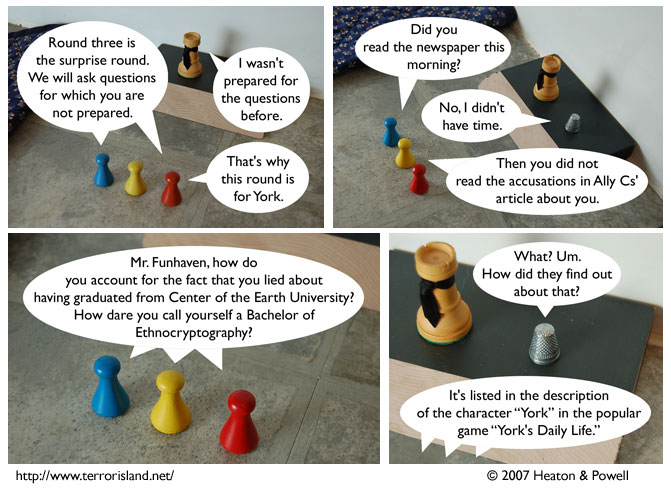

Strip #226
— Wednesday, November 21, 2007
York’s commitment to realism in gaming has come back to haunt him.
Notes, Thoughts, &c.
Ben’s Notes
Ethnocryptography is the study of the social and cultural context around cryptography, often focusing on non-Western cryptography.
Lewis’s Notes
Other majors we considered for York:
- Numismatics
- Windward Mathematics
- Aeronautical Anthropology
- Wind Engineering
- Theoretical Filmmaking
- Marine Astrology
- Morphology
- Socioharmonics